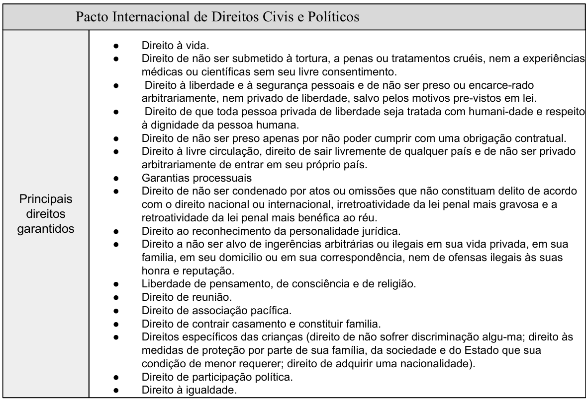

André de Carvalho Ramos, em sua obra Curso de Direitos Humanos, apresenta uma abordagem aprofundada sobre os direitos humanos, explorando sua fundamentação teórica, os sistemas de proteção e a aplicação prática em contextos nacionais e internacionais. O autor enfatiza a necessidade da consolidação desses direitos como um pilar fundamental para a democracia e o desenvolvimento social, além de destacar os avanços e desafios enfrentados ao longo da história.
No entanto, ao analisar a aplicação concreta dos direitos humanos, percebe-se que sua implementação pode estar condicionada a fatores econômicos e políticos. O autor reconhece que, apesar do caráter universal desses direitos, sua efetivação ainda encontra obstáculos, seja pela resistência de Estados soberanos em cumprir determinados tratados ou pela ausência de mecanismos eficazes de fiscalização e punição. Entretanto, a obra não aprofunda com a mesma intensidade os impactos do capitalismo sobre a seletividade na aplicação desses direitos, uma questão frequentemente debatida em teorias críticas.
A relação entre economia e direitos humanos tem sido objeto de reflexão em diversas correntes de pensamento. Algumas análises apontam que a lógica do mercado pode influenciar diretamente na forma como determinados direitos são garantidos ou negligenciados. Por exemplo, enquanto o direito à propriedade privada e à livre iniciativa são amplamente protegidos e incentivados, direitos sociais como moradia, saúde e educação podem ser condicionados à viabilidade econômica e à capacidade do Estado de custeá-los. Essa discrepância levanta questionamentos sobre até que ponto os direitos humanos são realmente universais ou se, na prática, tornam-se acessíveis de maneira desigual.
Além disso, observa-se que a defesa dos direitos humanos pode, em certos momentos, ser utilizada estrategicamente por atores políticos e econômicos para justificar determinadas ações no cenário internacional. Ao longo da história, houve casos em que intervenções militares ou sanções econômicas foram justificadas sob o argumento da proteção dos direitos humanos, ainda que motivadas por interesses geopolíticos e econômicos. Essa seletividade na aplicação dos princípios humanitários reforça a necessidade de uma análise mais crítica sobre a efetividade desses direitos na prática.
Essa complexa relação entre direitos humanos e interesses econômicos evidencia como a aplicação desses direitos pode não ser tão universal quanto idealizado. Enquanto Ramos apresenta uma visão jurídica e normativa robusta, focada na estruturação e na proteção internacional dos direitos humanos, o aspecto econômico e político que influencia sua efetividade nem sempre recebe a mesma ênfase.
Ao longo da história, observa-se que países com maior poder econômico e influência política tendem a exercer um protagonismo na definição dos direitos que são priorizados ou ignorados no cenário internacional. Em algumas situações, direitos fundamentais, como a liberdade de expressão e a autodeterminação dos povos, são amplamente defendidos em determinados contextos, mas relativizados quando colidem com interesses estratégicos. Assim, a aplicação dos direitos humanos pode ser moldada não apenas por princípios jurídicos, mas também por dinâmicas de poder e pela conveniência dos atores envolvidos.
Adiante outro ponto relevante é a maneira como os direitos humanos se relacionam com a lógica do mercado. No modelo econômico vigente, diversos serviços essenciais, como saúde, educação e habitação, são frequentemente tratados como mercadorias e não como direitos inalienáveis. Isso significa que, na prática, o acesso a esses direitos pode ser condicionado à capacidade financeira dos indivíduos ou à disponibilidade de investimentos estatais. Assim, direitos que deveriam ser garantidos a todos acabam sendo, muitas vezes, privilégio de uma parcela da população, reforçando desigualdades estruturais.
Além disso, há casos em que os direitos humanos são instrumentalizados para justificar ações políticas e econômicas. Intervenções militares, embargos e sanções econômicas, por exemplo, são frequentemente apresentadas como medidas em defesa da dignidade humana, ainda que seus reais impactos possam prejudicar populações vulneráveis. Essa utilização seletiva dos direitos humanos reforça a necessidade de uma reflexão crítica sobre sua implementação e sobre os fatores que determinam sua aplicação prática.
André de Carvalho Ramos, em sua obra Curso de Direitos Humanos, ao abordar o Sistema Universal da ONU, apresenta um quadro sinótico na página 154 que sintetiza os principais tratados internacionais relacionados à proteção dos direitos humanos. Entre eles, destaca-se o Pacto Internacional de Direitos Civis e Políticos, que formaliza uma ampla gama de direitos fundamentais, garantindo, na teoria, liberdades essenciais como a liberdade de expressão, de associação, de crença religiosa, além do direito a um julgamento justo, entre outros.
No entanto, apesar da robustez jurídica e da aparente completude desse pacto, sua aplicação prática encontra desafios consideráveis. A implementação desses direitos, longe de ser absoluta, muitas vezes se mostra condicionada a fatores políticos, religiosos, econômicos e culturais. Em determinadas regiões, por exemplo, a liberdade de expressão pode ser relativizada diante de interesses estatais, enquanto a liberdade religiosa pode ser restringida quando conflita com políticas governamentais ou normas culturais.
Dessa forma, o quadro sinótico apresentado na obra evidencia um paradoxo: enquanto o Pacto Internacional de Direitos Civis e Políticos estabelece uma estrutura normativa ampla e aparentemente eficaz, a prática revela uma realidade mais complexa, na qual a aplicação desses direitos é flexível e frequentemente moldada por interesses específicos. Essa disparidade reforça a necessidade de uma análise crítica sobre a efetividade dos mecanismos internacionais de proteção dos direitos humanos e os desafios que ainda impedem sua aplicação plena e universal.